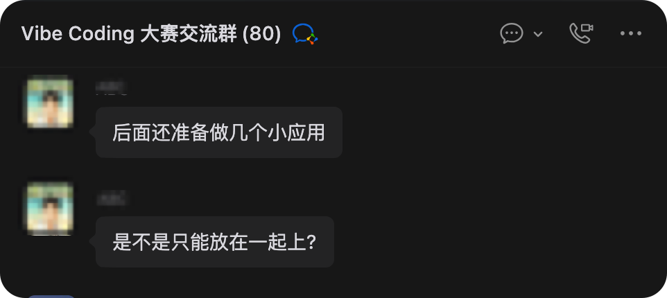
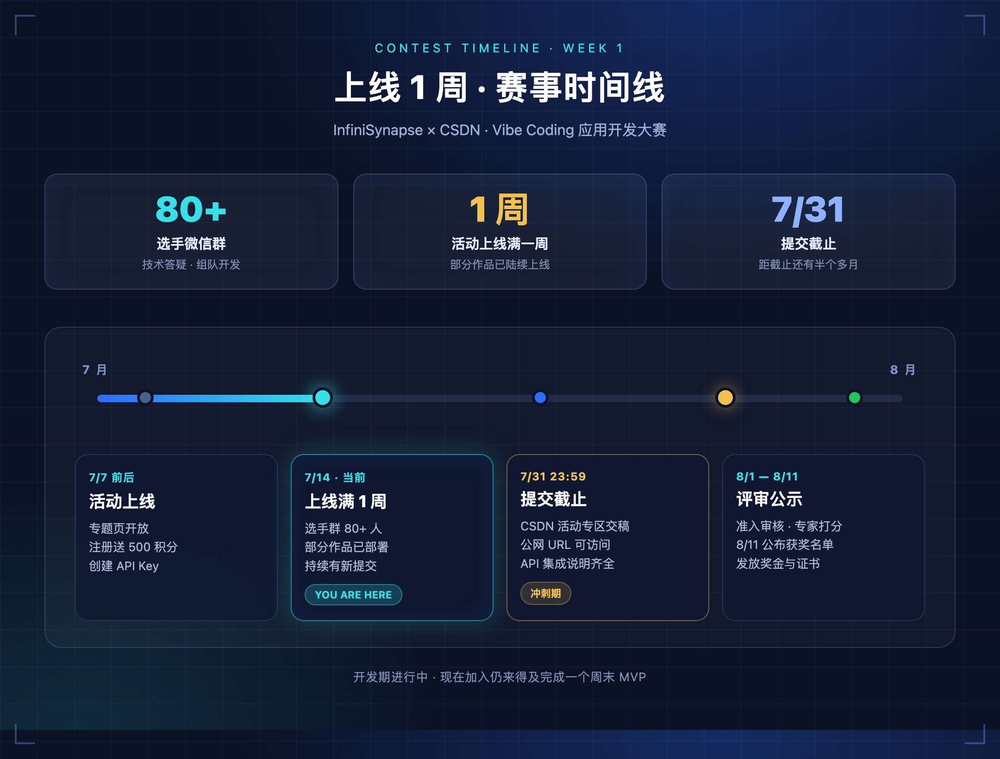
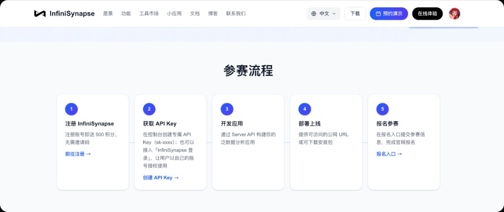
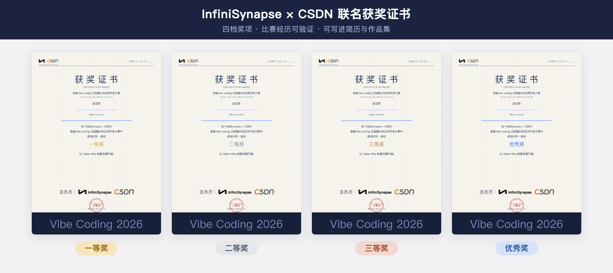
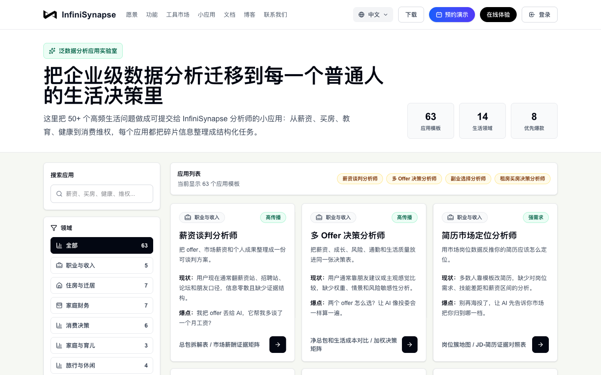
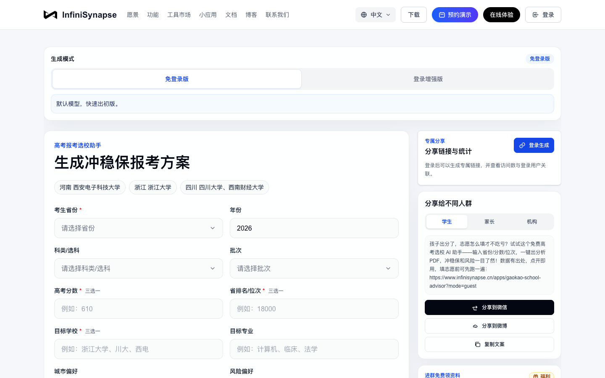
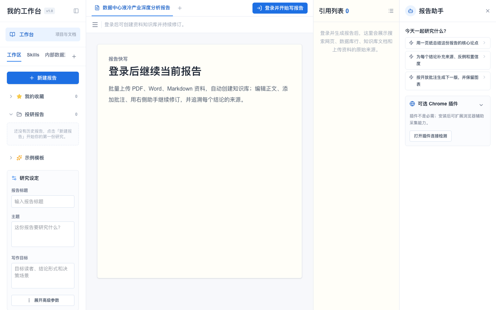
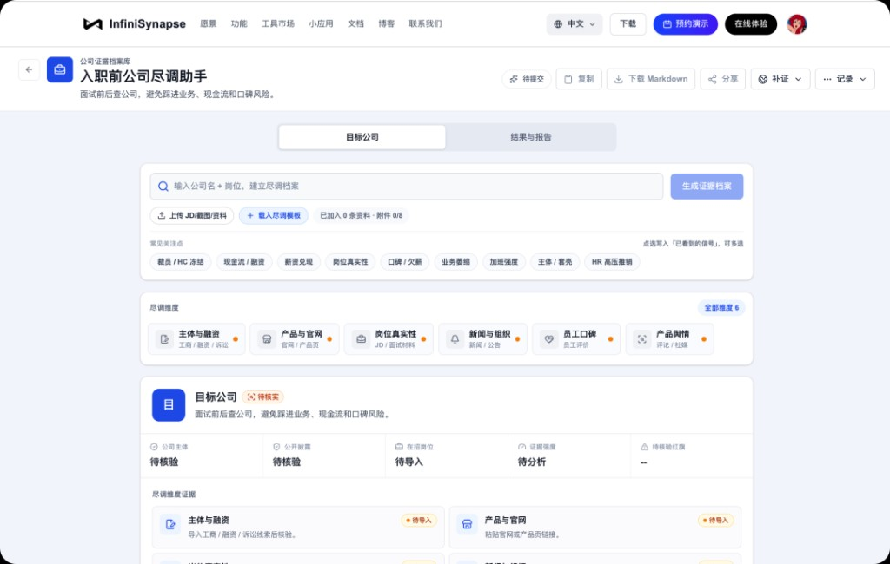
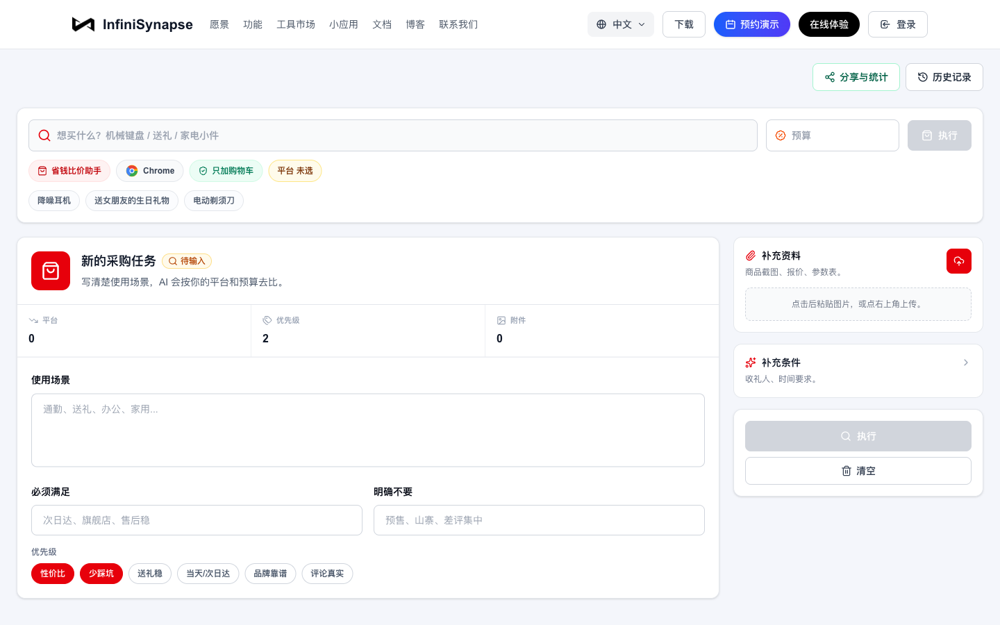
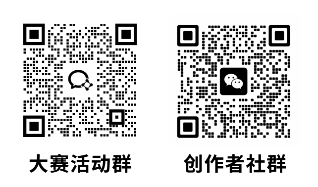

InfiniSynapse × CSDN 首届 Vibe Coding 泛数据分析应用开发大赛上线已满一周！来看看活动情况吧——

选手微信群已突破 81 人，讨论越来越实战🔥 群里既有拿过奖的 Vibe Coding 老手，也有第一次接 API 的新朋友——进来既能认识大佬、攒点圈内人脉，也能顺手围观各种脑洞产品。与此同时，部分参赛作品已陆续部署上线。这不是「只交 PPT 」的比赛——每一篇提交，都得是公网可访问、真实能体验的应用。
赛事进展一览

上线 1 周 · 赛事时间线 — 当前处于开发期， 7 月 31 日提交截止
⚡ 窗口仍在
距 7 月 31 日 23:59 提交截止还有半个多月。别忘了——这可是有奖金、有证书的正经比赛😎 建议应用先上线，新用户注册 InfiniSynapse 即送 500 积分，先把最小闭环跑通，再迭代也不迟。
部分已上线作品展示
先带你逛逛群里已经上线的几款作品，看看大家的脑洞都开到哪儿了 👀 说不定就能 spark 到你的下一个 idea 。
01 · 帮你找到那个东西 —— 不会起名，也能买到对的
场景：你想买一样东西，但不知道它叫什么、该搜什么关键词——只知道「用途」。
解法：按用途描述发起搜索与分析，把模糊需求变成可执行的选品与加购决策。
体验： https://www.infinisynapse.cn/apps/find-that-thing

按用途描述找商品，支持加入购物车
典型的 Vibe Coding 形态：前端 vibe 出界面，后端走 InfiniSynapse Server API 完成分析链路。用户不需要写 SQL ，只需要说清楚「我要什么」。
02 · 财格 —— 用 AI 读懂你的理财性格
场景：花钱、存钱、投资——每个人习惯不同，但很少有人能系统性地「看清自己」。
解法： AI 结合消费与行为数据，输出可读、可分享的「财格」报告。
体验： https://service.bckf.cn/caige/

低门槛输入 → 后台分析 → 结构化结果展示
轻量 C 端应用：低门槛输入 → 后台分析 → 结构化结果。对个人用户有粘性，也是「拉新 + 留存」方向的很好样本。
03 · ProjectValueLab —— 立项之前，先把价值算清楚
场景：团队或个人想启动一个项目，但「值不值得做」往往靠感觉，缺少证据支撑。
解法：围绕 证据、评分、风险与建议 输出项目价值调研报告，把决策从「拍脑袋」变成「有数据、有结构」。
体验： https://pvl.octoooo.com/projects/new

决策对象工作台，从常见场景快速发起价值调研
偏 B 端 / 工具型 方向，和消费、理财类应用形成互补——说明参赛者并没有扎堆做同一类 Demo ，而是在各自熟悉的领域里找真实需求。
还没动手？三步仍可赶上

注册 → API Key → 开发 → 部署 → 提交
说点实在的——现金奖金总额 ¥22,528，另设 50 名优秀奖；获奖者还能拿 InfiniSynapse × CSDN 联名证书，比赛经历可验证，写进简历、作品集都不虚。完整规则见 活动专题页[4]。

四档奖项 · 比赛经历可验证 · 可写进简历与作品集
还没想方向？先看官方应用模版
活动官网（ https://infinisynapse.cn ）上有一组现成 Mini App ，底层共用 InfiniSynapse Server API 与 Data Infra 。你可以先点开体验完整交互，再参照活动页的 Integration Guide ，把表单、进度、结果页换成自己的场景——数据分析链路不用从零搭。
泛数据分析实验室 — 63 个生活决策分析模版
覆盖薪资谈判、买房、消费复盘、求职对比、健康决策等日常场景。选一个模版，输入你的具体情况，系统会自动拉起分析流程并输出结构化结论。
适合还没定产品形态的同学：从 63 个方向里挑一个，改成更垂直、更贴近你用户群的版本。
地址： https://infinisynapse.cn/apps/personal-analytics

63 个决策模版，总有一个方向能 spark 你的 idea
高考报考选校 AI 助手 — 冲稳保方案、 PDF 报告
输入省份、分数、位次，自动拉取院校与专业数据，生成冲稳保报考方案，支持 PDF 报告导出。典型 「表单 → 长任务分析 → 可下载报告」 链路，和不少已上线参赛作品形态接近。
体验： https://www.infinisynapse.cn/apps/gaokao-school-advisor?mode=guest

输入分数位次，一键生成冲稳保报考方案
报告快写 — 批量上传、带来源正文、导出 PDF/Word
上传业务文档建知识库， AI 基于资料起草报告，正文带来源引用，支持导出 PDF / Word 。适合 「资料上传 → RAG 分析 → 文档产出」 类方向参考。
体验： https://infinisynapse.cn/apps/report-writer

上传业务文档， AI 起草带来源的报告
公司尽调助手 — 实体核验、融资背景、舆情与风险
输入公司名称，自动核验工商信息、融资背景、舆情与风险信号。入职前查公司底细、实习 offer 避坑——B 端 / 工具型 场景的官方样板之一。
体验： https://infinisynapse.cn/apps/personal-analytics/company-due-diligence

入职前查公司底细，避开踩坑 offer
省钱比价助手 — 跨平台券后价、差评挖掘
描述想买什么， AI 帮逛京东、淘宝等平台，对比券后价、挖掘差评关键词、给出加购建议。消费决策 + 电商数据分析，和「帮我找到那个东西」同属 C 端选品 方向，但交互与数据源可以完全不同。
体验： https://infinisynapse.cn/apps/straight-man-shopping

AI 帮逛京东淘宝，券后价比价 + 差评避坑
欢迎体验，也欢迎加入
不管你是想冲奖金拿证书、想认识一圈 Vibe Coding 大佬攒人脉，还是单纯来围观大家都在做什么好玩的产品——这个活动都值得来蹲一蹲 🙌
👇 点击下方「阅读原文」立即报名： https://infinisynapse.cn/contest/vibe-coding
📲 扫描下方二维码，加入 大赛活动群 和 创作者社群：

大赛活动群答疑打卡，创作者社群认识大佬 · 围观创意
你打算做什么方向？ 欢迎在评论区聊聊——下一批作品集锦，也许就有你的。
参考链接
[1] 前往注册: https://app.infinisynapse.cn/tasks
[2] 获取 Key: https://app.infinisynapse.cn/ai/apikey
[3] Server API 文档: https://infinisynapse.cn/zh/docs/InfiniSynapse%20Server%20API%20Reference
[4] 活动专题页: https://infinisynapse.cn/contest/vibe-coding